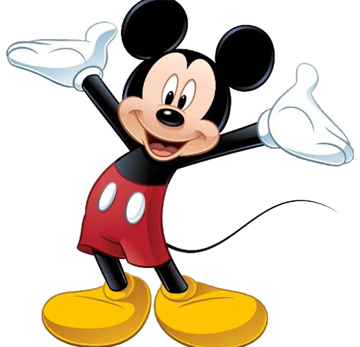
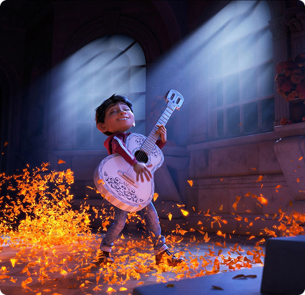
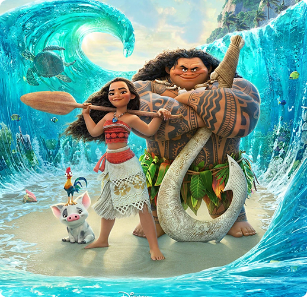
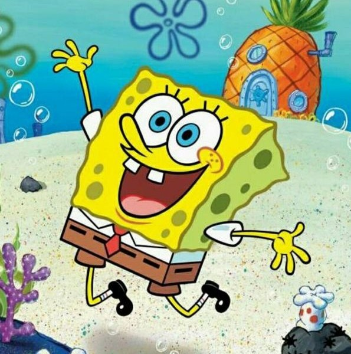

“Міккі Маус”
Міккі любить пригоди, але характер його спокійний і добрий. Сьогодні ми впізнаємо Міккі Мауса в його культових червоних шортах, жовтих туфлях і білих рукавичках. Він оптимістичний, сміливий і милий (The Walt Disney Family Museum).

“Коко”
Музикант-початківець Мігель, зіткнувшись із забороною предків на музику, потрапляє в Країну Мертвих, щоб знайти свого прапрадіда, легендарного співака (опис IMDb).

“Ваяна”
У Стародавній Полінезії, коли жахливе прокляття, накладене на себе напівбогом Мауї, досягає острова Ваяни, вона відповідає на заклик Океану шукати напівбога, щоб налагодити ситуацію (опис IMDb).

“Губка Боб”
Весела морська губка Губка Боб живе в підводному місті Бікіні-Боттом і разом зі своїми друзями постійно потрапляє у кумедні та неймовірні пригоди.